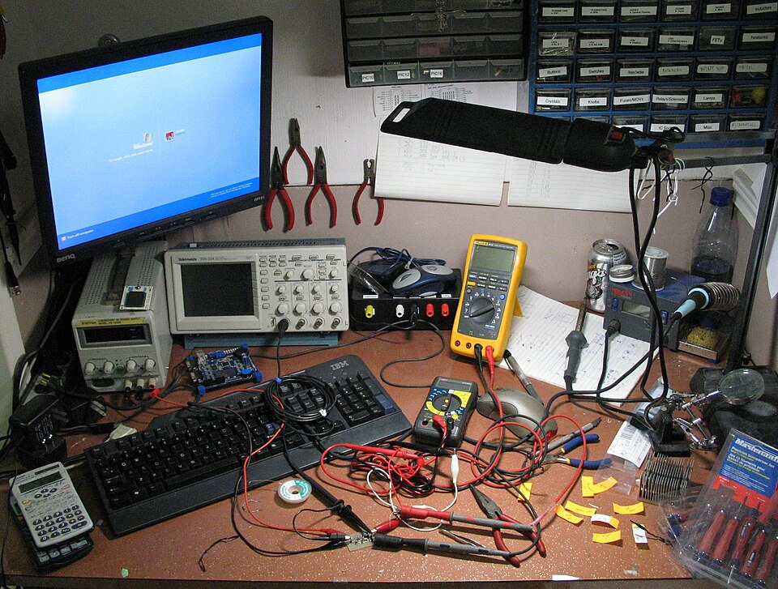

Your ECE foundation and learning routes
Build a circuit, predict what it should do, measure it, and explain a failure. Use that same routine when you move from a breadboard to a welder, building controller, laptop, phone, robot or antenna.
Start with the first three sessions
Watch on YouTube · Complete beginner's guide to using a breadboard · Moritz Klein
See how a jumper bridges separate rows before you build the first LED circuit.
Set up the bench. Read P01 and T00. Write one example each of converting mA to A and kΩ to Ω. Identify the meter jacks and practise returning the red lead to the voltage jack after current measurements.
Build an LED circuit. Do P02 and P03. Measure the supply, LED and resistor voltages. Use the measured resistor voltage and resistance to compute current. Explain how much of the supply voltage each component uses.
Change one thing. Do the loaded divider in P04. Predict the change before attaching the load. Turn power off, open one jumper, then use measurements to locate the fault as though someone else had introduced it.
Foundation checkpoints

Photo by James Bastow, resized. Original photo · CC BY-SA 2.0.

Allow two or three bench sessions per stage. Redo a checkpoint on a different circuit before advancing if you still need the original wiring instructions to explain it.
| Stage | Practice and theory | What to put in your notebook |
|---|---|---|
| 1. DC and measurement | P01–P04, P24, T01–T04, T24 | A schematic with node voltages, a prediction and an explanation for any difference. |
| 2. Parts and power | P05–P10, T05–T08, T11–T14 | A soldered LED or switch circuit, a joint inspection and evidence that the supply holds up under load. |
| 3. Signals and instruments | Do P11 before P14–P15 and P25. Read T15–T16 and T25 as needed. | A measured bus or signal with voltage levels, time scale and an explanation of what the probe can change. |
| 4. Design and diagnosis | P12–P13, P21–P23, P27 | A sensor-to-output project with a schematic, a deliberate fault, a before/after measurement and a retest. |
Choose a branch when you can explain your measurements
| Route | Next work | Proof of skill |
|---|---|---|
| Welding-set repair | W00–W07 + T20–T23 | A battery-powered bridge lab and a supervised repair record with the original failure and return-to-service checks. |
| Building management systems | P22 first site drawing → P54 mount and verify a sensor → C17 damper fault → P38 BACnet point check | A mounted sensor and matching cable labels, then measured readings and a point-to-point test record. |
| Android repair | P34 Pixel 4a screen, loudspeaker and jack → P36 battery or P35 Galaxy A54 USB-C | Record the failed function and the functions that still work. Replace one module on a documented donor and repeat the same tests. |
| Laptop repair | P32 desktop parts to laptop SSD and RAM → P33 startup power checks | Identify the storage and memory before replacing either. Record what the firmware detects before and after the repair. |
| Industrial automation | P39 PLC trainer → P40 SCADA trend → P41 drive and motor condition | A start/stop and proof test table, plus one fault timeline with a clear next check. |
| Embedded and IoT | P27 a controller that can stop → P55 firmware debugging or P30 stale data → P49 CAN logging | Commands, feedback and timestamps that make lost data or a stopped program easy to identify. |
| Robotics, vision and AI | P28 first robot → P42 motor and encoder → P43 arm → P45 camera → P46 depth → P47 inspection | A robot diagnostic case and a calibrated camera test, including frames the system should mark uncertain. |
| Electronics design and instrument test | P48 KiCad PCB → P51 sensor measurement → P52 power budget | A board release with accessible test points, a held-out calibration check and a real power profile. |
| RF and fibre | P31 antenna → P50 VNA or P53 fibre trace | A measurement at a known reference plane or a test record that distinguishes link loss from a local event. |
Read the theory when a measurement raises a question
Start with each lab’s Why it works links. Use the parts and symbol index when a new part appears and the practical learning library for a source course. If your aim is a job, use the route comparison to choose a first lab and C16 to keep your evidence together.